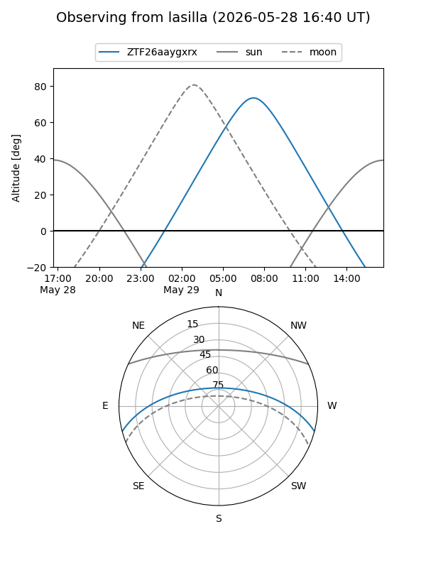
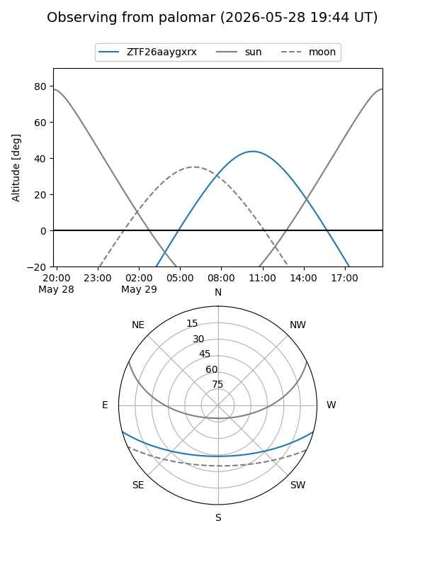

ZTF26aaygxrx
Target ZTF26aaygxrx at 2026-05-29 13:18
Aliases and brokers:
lsst-FINK: link
lsst-Lasair: link
lsst-ALeRCE: link
ztf-FINK: link
ztf-Lasair: link
ztf-ALeRCE: link
alt names
ZTF26aaygxrx (ztf,fink_ztf)
Coordinates:
equatorial (ra, dec) = 284.0894,-12.85709
equatorial (HMS+DMS) = 18:56:21.44,-12:51:25.51
galactic (l, b) = (21.9866,-6.89724)
Flags:
Photometry:
last ztfg=19.60
2 ztfg detections
Lightcurve
Visibility


Additional plots